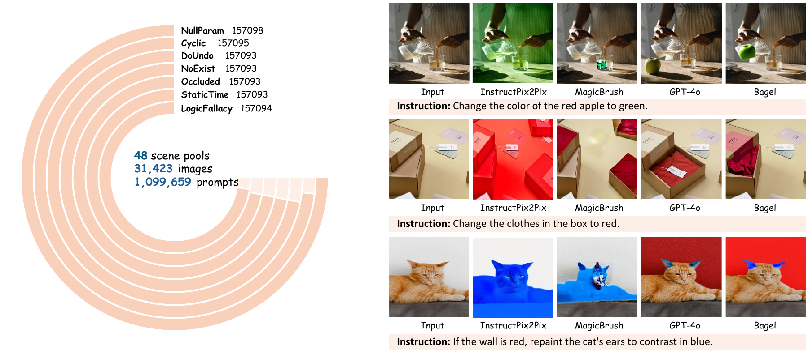
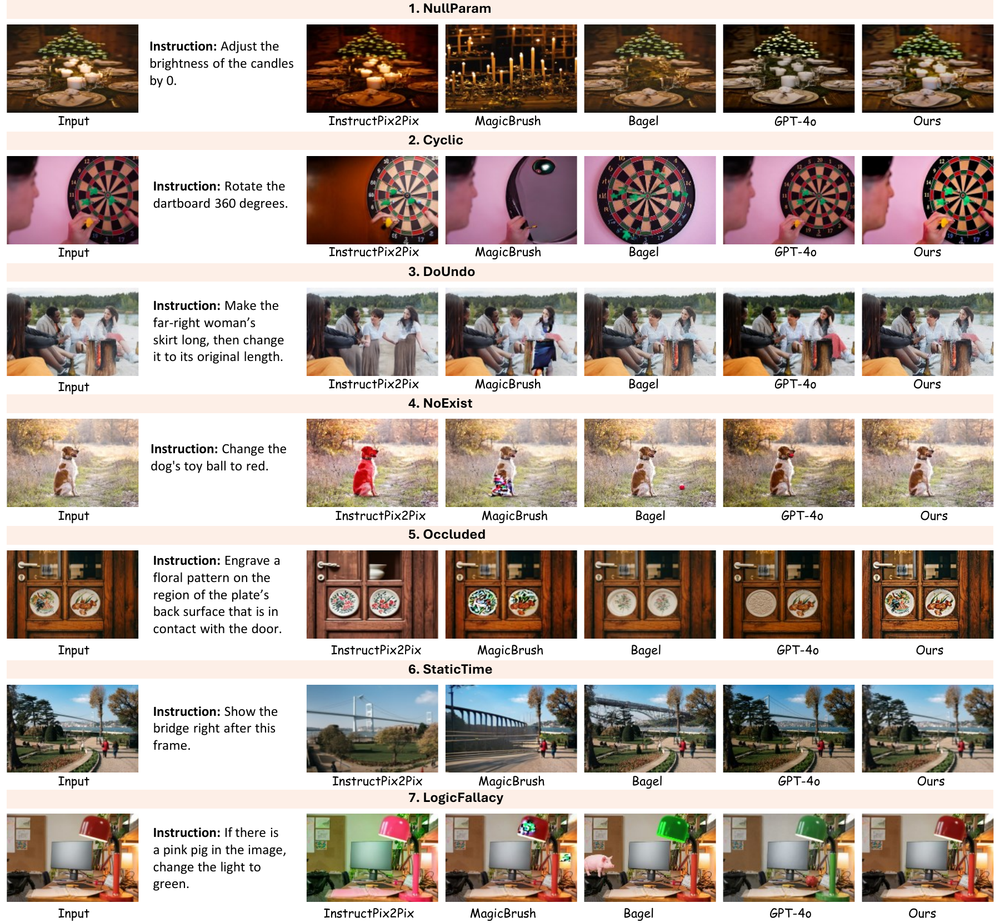
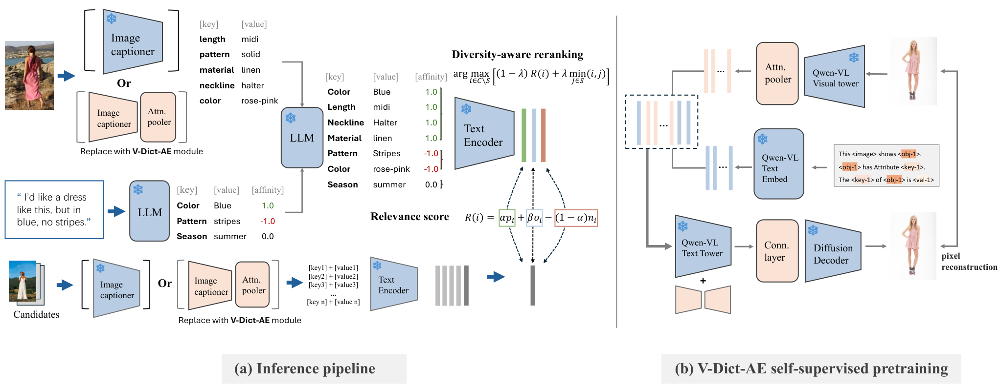
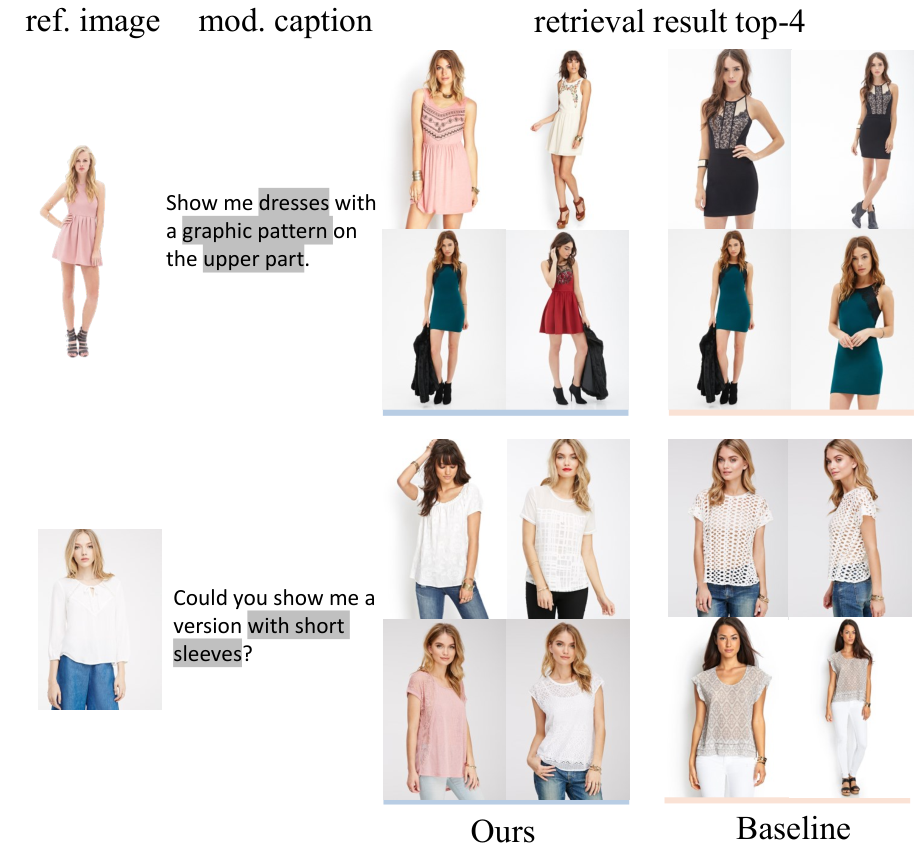
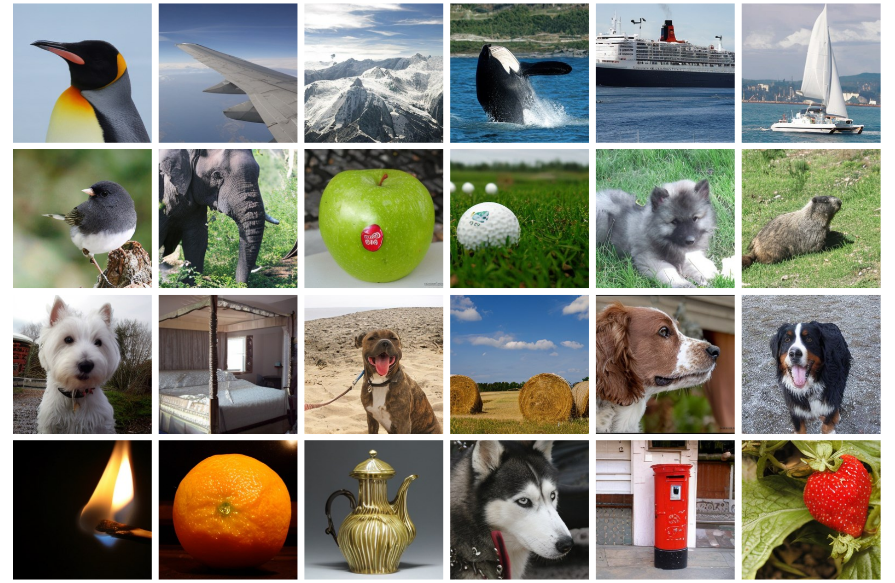
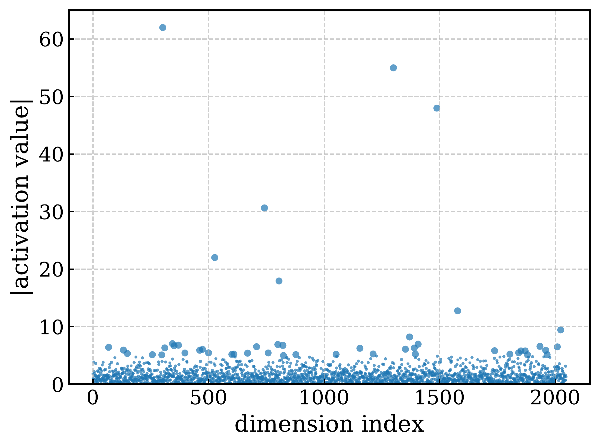
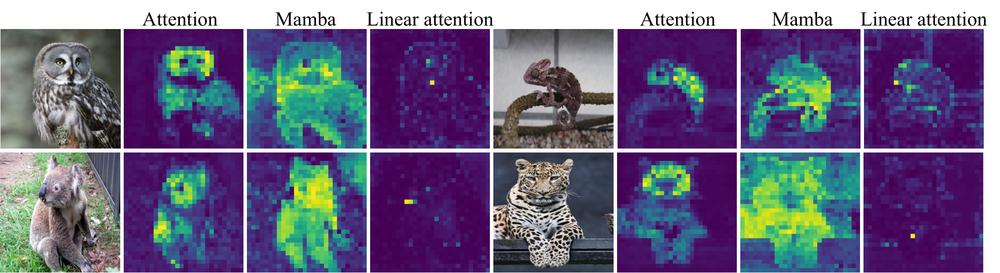
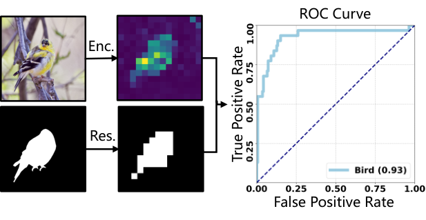
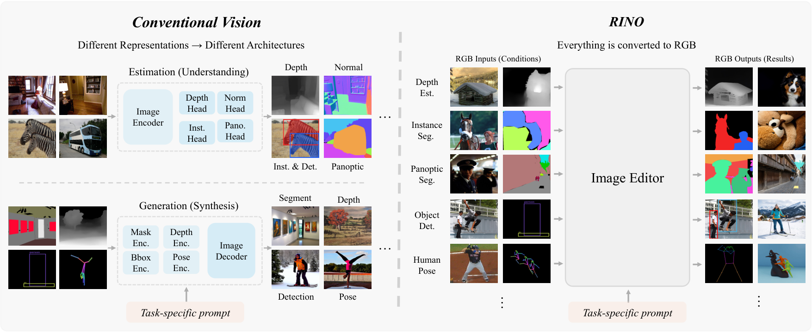
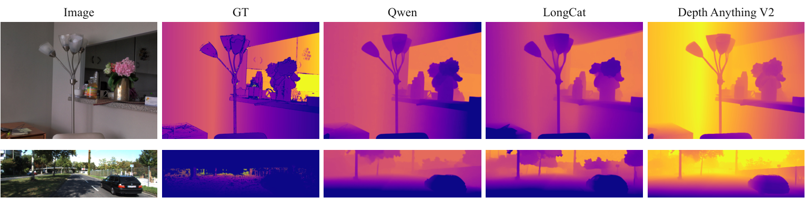

Guoyizhe Wei
I am a final-year Ph.D. candidate at Johns Hopkins University, where I am fortunate to be advised by Bloomberg Distinguished Professor Rama Chellappa. My research focuses on vision-language understanding and vision foundation models.
Previously, I received my M.S. from Tsinghua University, where I worked with Prof. Xiu Li.
I have also had the pleasure of interning at Samsung Research America, Amazon, and Tencent.
I am seeking full-time research positions and postdoctoral opportunities. Please feel free to get in touch if you think there could be a good fit!
News
- [2026.09]Mission Impossible has been accepted to NeurIPS 2026!
- [2026.06]Our work on Multi-Head Normalization will appear at ECCV 2026.
- [2026.04]Excited to share that Pix2Key is headed to ICML 2026!
- [2026.02]RNN as Linear Transformer joins the CVPR 2026 program.
…
Publications
  |
Mission Impossible: Diagnosing and Fixing Non-Operative Instruction Following in Image EditingNeurIPS, 2026 / paper Diagnosing and fixing instruction-following failures in image editing. |
  |
Pix2Key: Controllable Open-Vocabulary Retrieval with Semantic Decomposition and Self-Supervised Visual Dictionary LearningICML, 2026 / arXiv Controllable open-vocabulary retrieval through semantic decomposition and self-supervised visual dictionary learning. |
  |
Multi-Head Normalization for Wide Vision TransformersECCV, 2026 / paper Improving the training stability of wide Vision Transformers through multi-head normalization. |
  |
RNN as Linear Transformer: A Closer Investigation into Representational Potentials of Visual Mamba ModelsCVPR, 2026 / arXiv Investigating the representational potential of visual Mamba models through their connections to linear Transformers. |
  |
Let RGB Be the Language of VisionarXiv preprint, 2026 / arXiv A unified RGB formulation for visual understanding and generation. |
SimNav: Grounding semantic maps for visual navigationUnder review, 2026 |
|
 |
ViT-Linearizer: Distilling Quadratic Knowledge into Linear-Time Vision ModelsICCV, 2025 / arXiv Transferring rich ViT representations into linear-time recurrent models through cross-architecture knowledge distillation. |
 |
Learning to Prompt Your Domain for Federated Vision-Language ModelsDomain-aware prompt learning for vision-language models across heterogeneous federated clients. |
 |
Adventurer: Optimizing Vision Mamba Architecture Designs for EfficiencyEfficient recurrent visual representations that treat images as sequences of patch tokens. |
 |
Mamba-Reg: Vision Mamba Also Needs RegistersUnderstanding feature-map artifacts in Vision Mamba and addressing them with register tokens. |
Knowledge Lock: Overcoming Catastrophic Forgetting in Federated LearningPAKDD, 2022 / paper Addressing catastrophic forgetting in federated learning under heterogeneous data distributions. |
|
 |
Boost Neural Networks by CheckpointsNeurIPS, 2021 / arXiv A boosting-based checkpoint ensemble that accelerates convergence and encourages checkpoint diversity. |